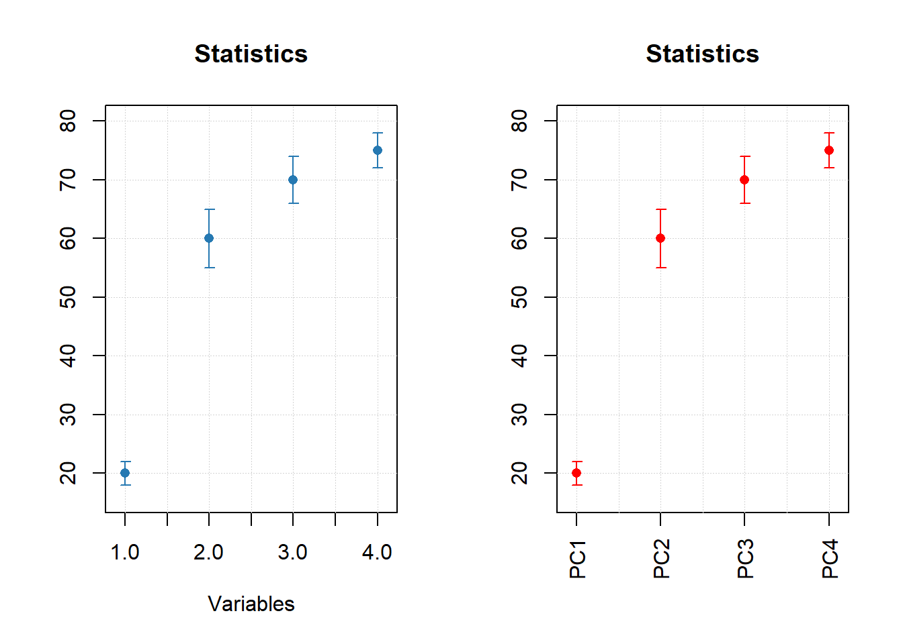
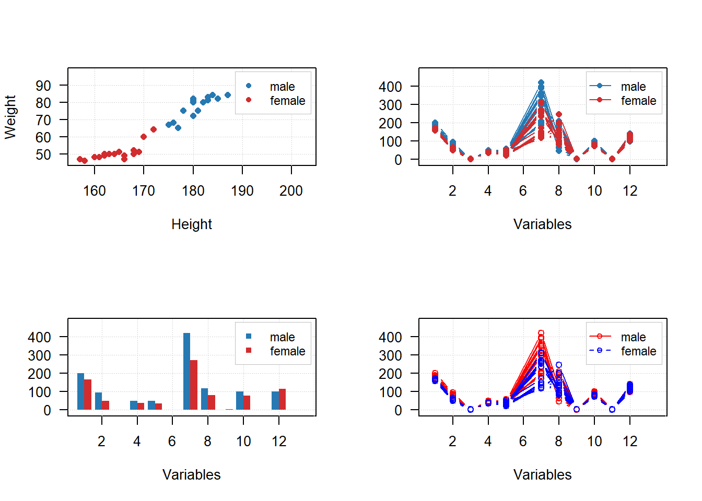
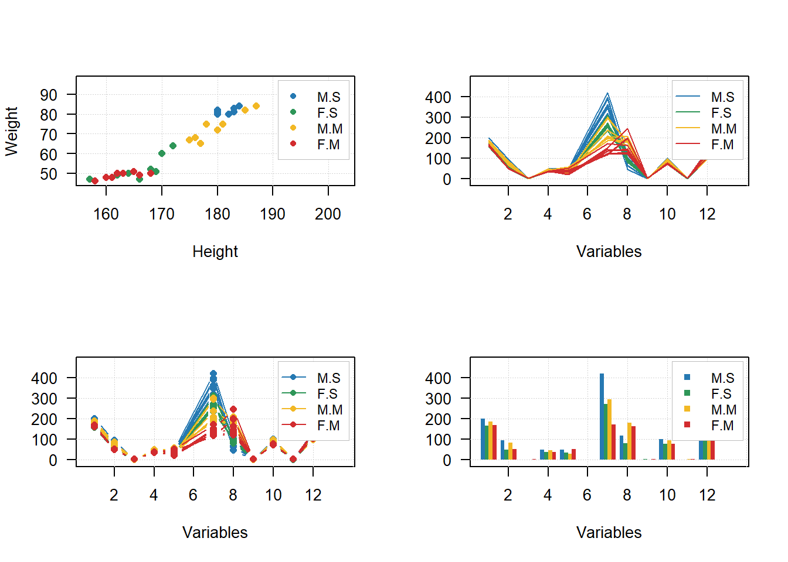

10 R Modulo 3.3 - Gráficos univariados
10.1 Sobre os dados
Considere os dados merísticos (ou médições morfológicas) da espécie de peixe Cichla ocellaris (tucunaré amarelo) do reservatório da barragem de Gramame, PB (MEDEIROS; ROSA, 1994) (Figura 10.1). Existem 421 medições do comprimemto total (CT), comprimento padrão (CP) e peso total (PT), além do sexo (MACHO, FÊMEA ou imaturo), e outros descritores da estrutura populacional da espécie, um conjunto de dados formidável.

Figura 10.1: Dados merísticos da espécie de peixe Cichla ocellaris (tucunaré amarelo) do reservatório da barragem de Gramame, PB.
10.2 Organização básica
dev.off() #apaga os graficos, se houver algum
rm(list=ls(all=TRUE)) #limpa a memória
cat("\014") #limpa o console Instalando os pacotes necessários para esse módulo
Os códigos acima, são usados para instalar e carregar os pacotes necessários para este módulo. Esses códigos são comandos para instalar pacotes no R. Um pacote é uma coleção de funções, dados e documentação que ampliam as capacidades do R (R CRAN (TEAM, 2017) e RStudio (TEAM, 2022)). No exemplo acima, o pacote openxlsx permite ler e escrever arquivos Excel no R. Para instalar um pacote no R, você precisa usar a função install.packages().
Depois de instalar um pacote, você precisa carregá-lo na sua sessão R com a função library(). Por exemplo, para carregar o pacote openxlsx, você precisa executar a função library(openxlsx). Isso irá permitir que você use as funções do pacote na sua sessão R. Você precisa carregar um pacote toda vez que iniciar uma nova sessão R e quiser usar um pacote instalado.
Agora vamos definir o diretório de trabalho. Esse código é usado para obter e definir o diretório de trabalho atual no R. O comando getwd() retorna o caminho do diretório onde o R está lendo e salvando arquivos. O comando setwd() muda esse diretório de trabalho para o caminho especificado entre aspas. No seu caso, você deve ajustar o caminho para o seu próprio diretório de trabalho. Lembre de usar a barra “/” entre os diretórios. E não a contra-barra “\”.
10.3 Importando a planilha
ATENÇÃO
Os links para baixar as planilhas necessárias para repetir esse tutorial podem ser encontrados na seção Arquivos disponíveis do Capítulo Bases de dados.
Ou, baixe aqui o arquivo tucuna.xlsx
Vamos importar a planilha de dados univariados tucuna.xlsx. Note que o símbolo # em programação R significa que o texto que vem depois dele é um comentário e não será executado pelo programa. Isso é útil para explicar o código ou deixar anotações. Ajuste a segunda linha do código abaixo para refletir “C:/Seu/Diretório/De/Trabalho/Planilha.xlsx”.
library(openxlsx)
univ_all <- read.xlsx("D:/Elvio/OneDrive/Disciplinas/_EcoNumerica/5.Matrizes/tucuna.xlsx",
rowNames = T, colNames = T,
sheet = "tucuna")
head(univ_all,10)
head(univ_all[, 1:5], 10)## CT_cm PT_g CP_cm Ctubo_cm PC_g %PT Pest_g Cest_cm gr_est ir_est
## TU001 32.4 468.8 27.2 39.8 458.9 2.111775 3.9 7.7 I 0.8319113
## TU002 33.4 520.0 28.8 14.3 507.4 2.423077 5.9 10.0 I 1.1346154
## TU003 27.3 301.5 23.8 13.0 283.4 6.003317 15.5 10.2 III 5.1409619
## TU004 13.2 28.2 11.0 16.5 27.7 1.773050 0.3 4.3 I 1.0638298
## TU005 14.3 38.9 11.9 15.5 37.7 3.084833 0.8 4.5 III 2.0565553
## TU006 22.7 431.7 20.5 24.2 418.7 3.011350 9.9 6.4 III 2.2932592
## TU007 23.2 544.0 19.2 25.0 520.1 4.393382 6.8 7.5 II 1.2500000
## TU008 13.5 161.6 11.5 17.5 157.0 2.846535 4.1 6.8 II 2.5371287
## TU009 24.6 200.5 20.5 25.7 195.9 2.294264 2.5 7.6 II 1.2468828
## TU010 19.4 86.7 16.0 18.3 84.5 2.537486 0.7 5.1 I 0.8073818
## Pint_g Cint_cm gr_int ir_int Pgon_g Cgon_cm emg ig
## TU001 4.8 38.3 II 1.0238908 1.2 7 IMATURO 0.25597270
## TU002 5.3 13.3 II 1.0192308 1.4 6.5 MADURO 0.26923077
## TU003 2.4 12.0 II 0.7960199 0.2 7.7 EM MATURACAO 0.06633499
## TU004 0.1 16.0 II 0.3546099 0.1 5 IMATURO 0.35460993
## TU005 0.3 15.0 II 0.7712082 0.1 3.2 IMATURO 0.25706941
## TU006 2.7 23.7 II 0.6254343 0.4 7.8 EM MATURACAO 0.09265694
## TU007 3.3 24.5 II 0.6066176 13.8 7.9 MADURO 2.53676471
## TU008 0.4 17.0 I 0.2475248 0.1 2.5 IMATURO 0.06188119
## TU009 2.0 25.3 II 0.9975062 0.1 6.5 EM MATURACAO 0.04987531
## TU010 1.4 17.7 II 1.6147636 0.1 6 IMATURO 0.11534025
## mes periodo estação sexo
## TU001 ago chuvoso inverno MACHO
## TU002 ago chuvoso inverno MACHO
## TU003 ago chuvoso inverno MACHO
## TU004 ago chuvoso inverno MACHO
## TU005 ago chuvoso inverno MACHO
## TU006 set chuvoso inverno MACHO
## TU007 set chuvoso inverno FEMEA
## TU008 set chuvoso inverno imaturo
## TU009 set chuvoso inverno MACHO
## TU010 set chuvoso inverno MACHO
## CT_cm PT_g CP_cm Ctubo_cm PC_g
## TU001 32.4 468.8 27.2 39.8 458.9
## TU002 33.4 520.0 28.8 14.3 507.4
## TU003 27.3 301.5 23.8 13.0 283.4
## TU004 13.2 28.2 11.0 16.5 27.7
## TU005 14.3 38.9 11.9 15.5 37.7
## TU006 22.7 431.7 20.5 24.2 418.7
## TU007 23.2 544.0 19.2 25.0 520.1
## TU008 13.5 161.6 11.5 17.5 157.0
## TU009 24.6 200.5 20.5 25.7 195.9
## TU010 19.4 86.7 16.0 18.3 84.5Exibindo os dados importados (esses comando são “case-sensitive” ignore.case(object)).
10.5 Gráficos de dispersão
(https://mda.tools/docs/datasets--simple-plots.html)
library(mdatools)
#removendo linhas ou coluns por nome
attr(univ, "name") = "Tucunaré"
attr(univ, "xaxis.name") = "Eixo X"
attr(univ, "yaxis.name") = "Eixo Y"
par(mfrow = c(1,2))
# show plot for the whole dataset (columns 1 and 2 will be taken)
mdaplot(univ, type = "p")
# subset the dataset and keep only columns 6 and 7 and then make a plot
mdaplot(mda.subset(univ, select = c(1,2)), type = "p")
par(mfrow = c(2,2))
# show Height vs Weight and color points by the Beer consumption
mdaplot(univ, type = "p", cgroup = univ_all[, var])
# do the same but do not show colorbar
mdaplot(univ, type = "p", cgroup = univ_all[, var],
show.colorbar = FALSE)
# do the same but use grayscale color map
mdaplot(univ, type = "p", cgroup = univ_all[, var], colmap = "gray")
# do the same but using colormap with gradients between red, yellow and green colors
mdaplot(univ, type = "p", cgroup = univ_all[, var],
colmap = c("red", "yellow", "green"))
# make a factor using values of variable Sex and define labels for the factor levels
g <- factor(univ_all[, "sexo"],
levels = c("MACHO", "FEMEA", "imaturo"))
g
par(mfrow = c(1, 2))
mdaplot(univ, type = "p", cgroup = g)
mdaplot(univ, type = "p", cgroup = g, colmap = "gray")
par(mfrow = c(1, 2))
# default way - color grouping is used for borders and "bg" for background
mdaplot(univ, type = "p", cgroup = univ_all[, var], pch = 21, bg = "white")
# inverse - color grouping is used for background and "bg" for border
mdaplot(univ, type = "p", cgroup = univ_all[, var], pch = 21, bg = "white", pch.colinv = TRUE)
par(mfrow = c(2, 2))
# by default row names will be used as labels
mdaplot(univ, type = "p", show.labels = TRUE)
# here we tell to use indices as labels instead
mdaplot(univ, type = "p", show.labels = TRUE, labels = "indices")
# here we use names again but change color and size of the labels
mdaplot(univ, type = "p", show.labels = TRUE, labels = "names", lab.col = "red", lab.cex = 0.5)
# finally we provide a vector with manual values to be used as the labels
mdaplot(univ, type = "p", show.labels = TRUE, labels = paste0("T", seq_len(nrow(univ))))
par(mfrow = c(2, 2))
# manual values and tick labels for the x-axis
mdaplot(univ, xticks = c(10,30,40), xticklabels = c("Small", "Medium", "Large"))
# same but with rotation of the tick labels
mdaplot(univ, xticks = c(10,30,40), xticklabels = c("Small", "Medium", "Large"), xlas = 2)
# manual values and tick labels for the y-axis
mdaplot(univ, yticks = c(200,600,900), yticklabels = c("Light", "Medium", "Heavy"))
# same but with rotation of the tick labels
mdaplot(univ, yticks = c(200,600,900), yticklabels = c("Light", "Medium", "Heavy"), ylas = 2)
par(mfrow = c(1, 2))
# change margin for bottom part
par(mar = c(6, 4, 4, 2) + 0.1)
mdaplot(univ, xticks = c(10,30,40),
xticklabels = c("Small", "Medium", "Large"),
xlas = 2, xlab = "")
mtext("Comprimento", side = 1, line = 5)
# change margin for left part
par(mar = c(5, 6, 4, 1) + 0.1)
mdaplot(univ, yticks = c(200,600,900), yticklabels = c("Light", "Medium", "Heavy"),
ylas = 2, ylab = "")
mtext("Peso", side = 2, line = 5)
par(mfrow = c(1,2))
mdaplot(univ, show.grid = FALSE, show.lines = c(20,200))
mdaplot(univ, show.lines = c(40, NA))
# define a factor using values of variable Sex and simple labels
g
par(mfrow = c(1, 2))
# make a scatter plot grouping points by the factor and then show convex hull for each group
p <- mdaplot(univ, cgroup = g)
plotConvexHull(p)
# make a scatter plot grouping points by the factor and then show 90% confidence intervals
p <- mdaplot(univ, cgroup = g)
plotConfidenceEllipse(p, conf.level = 0.90)
# média agrupada por fator
media <- tapply(univ$CT_cm, g, mean)
media
anova <- aov(CT_cm ~ g, data = univ_all)
summary(anova)
plot(anova,1)10.6 Gráficos de linha
library(mdatools)
var <- univ$CT_cm
attr(univ$CT_cm, "yaxis.name") = "CT_cm"
attr(univ$CT_cm, "xaxis.name") = "Indivíduo"
par(mfrow = c(2, 1))
mdaplot(univ$CT_cm, type = "l")
mdaplot(univ$CT_cm, type = "l", col = "darkgray", lty = 2)
10.7 Gráficos de barra
# make a simple two rows matrix with values
d = rbind(
c(20, 50, 60, 90),
c(14, 45, 59, 88)
)
# add some names and attributes
colnames(d) = paste0("PC", 1:4)
rownames(d) = c("Cal", "CV")
attr(d, "xaxis.name") = "Components"
attr(d, "name") = "Explained variance"
par(mfrow = c(1, 2))
# make a default bar plot
mdaplot(d, type = "h")
# make a bar plot with manual xtick labels, color and labels for data values
mdaplot(d, type = "h", xticks = seq_len(ncol(d)), xticklabels = colnames(d), col = "red",
show.labels = TRUE, labels = "values", xlas = 2, xlab = "", ylab = "Variance, %")
d = rbind(
c(20, 60, 70, 75),
c(2, 5, 4, 3)
)
# add names and attributes
rownames(d) = c("Mean", "Std")
colnames(d) = paste0("PC", 1:4)
attr(d, 'name') = "Statistics"
# show the plots
par(mfrow = c(1, 2))
mdaplot(d, type = "e")
mdaplot(d, type = "e", xticks = seq_len(ncol(d)),
xticklabels = colnames(d), col = "red", xlas = 2, xlab = "")
par(mfrow = c(1, 2))
mdaplot(mda.subset(d, 1), type = "h", col = "lightgray")
mdaplot(d, type = "e", show.axes = FALSE, pch = NA)
mdaplot(mda.subset(d, 1), type = "b")
mdaplot(d, type = "e", show.axes = FALSE)
10.8 Gráficos de grupos
# let's create a simple dataset with 3 rows
p = rbind(
c(0.40, 0.69, 0.88, 0.95),
c(0.34, 0.64, 0.81, 0.92),
c(0.30, 0.61, 0.80, 0.88)
)
# add some names and attributes
rownames(p) = c("Cal", "CV", "Test")
colnames(p) = paste0("PC", 1:4)
attr(p, "name") = "Cumulative variance"
attr(p, "xaxis.name") = "Components"
# and make group plots of different types
par(mfrow = c(2, 2))
mdaplotg(p, type = "l")
mdaplotg(p, type = "b")
mdaplotg(p, type = "h", xticks = 1:4)
mdaplotg(p, type = "b", lty = c(1, 2, 1), col = c("red", "green", "blue"), pch = 1,
xticks = 1:4, xticklabels = colnames(p))
par(mfrow = c(2, 2))
mdaplotg(p, type = "l", legend.position = "top")
mdaplotg(p, type = "b", legend.position = "bottomleft")
mdaplotg(p, type = "h", legend.position = "bottom")
mdaplotg(p, type = "b", show.legend = FALSE)
par(mfrow = c(2, 2))
mdaplotg(p, type = "l", show.labels = TRUE)
mdaplotg(p, type = "b", show.labels = TRUE, labels = "indices")
mdaplotg(p, type = "h", show.labels = TRUE, labels = "values")
mdaplotg(p, type = "b", show.labels = TRUE, labels = "values")
# load data and exclude column with income
data(people)
people = mda.exclcols(people, "Income")
# use values of sex variable to split data into two subsets
sex = people[, "Sex"]
m = mda.subset(people, subset = sex == -1)
f = mda.subset(people, subset = sex == 1)
# combine the two subsets into a named list
d = list(male = m, female = f)
# make plots for the list
par(mfrow = c(2, 2))
mdaplotg(d, type = "p")
mdaplotg(d, type = "b")
mdaplotg(d, type = "h")
mdaplotg(d, type = "b", lty = c(1, 2), col = c("red", "blue"), pch = 1)
sex = factor(people[, "Sex"], labels = c("M", "F"))
reg = factor(people[, "Region"], labels = c("S", "M"))
groups = data.frame(sex, reg)
par(mfrow = c(2, 2))
mdaplotg(people, type = "p", groupby = groups)
mdaplotg(people, type = "l", groupby = groups)
mdaplotg(people, type = "b", groupby = groups)
mdaplotg(people, type = "h", groupby = groups)
Sites para consulta
https://www.geeksforgeeks.org/break-axis-of-plot-in-r/ https://stackoverflow.com/questions/72498597/add-a-break-to-a-bar-chart-when-one-value-is-very-large